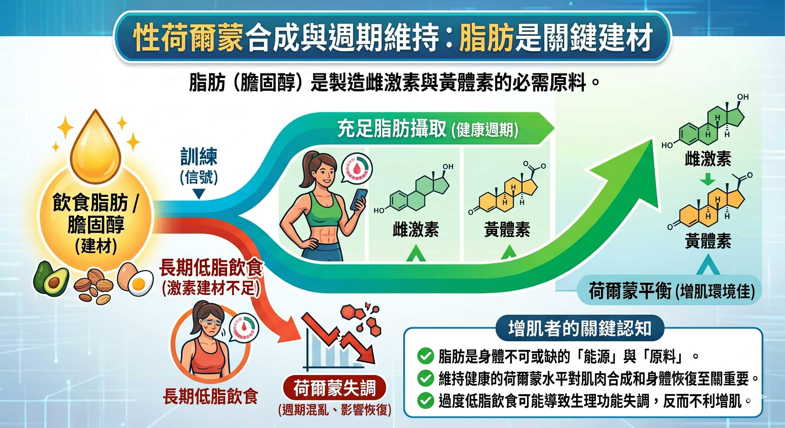

四天平均熱量 1,356 kcal，比 InBody 建議的每日消耗 1,868 kcal 少了約 500 kcal。長期熱量不足，是增肌效率最大的阻力。
| 項目 | 目前狀況 | 評估 |
|---|---|---|
| 食物品質 | 原型食物為主，少加工 | 非常好 |
| 蛋白質攝取 | 平均 100g（1.9g/kg） | 已達標 |
| 碳水選擇 | 地瓜、燕麥、糙米為主 | 優質來源 |
| 蔬菜攝取 | 每餐都有，種類多元 | 非常好 |
| 總熱量 | 平均 1,356 kcal | 明顯不足 |
| 脂肪攝取 | 平均 50g，偏低 | 可再增加 |
蛋白質、食物品質、蔬菜攝取都做得很好，不需要改變現有的飲食模式。
唯一需要調整的是整體熱量，而且增加的方式可以很無感。
蛋白質已經夠了，不用再特別增加。
熱量缺口優先用脂肪來補，密度高、不增加份量感、符合妳現有的飲食風格。
